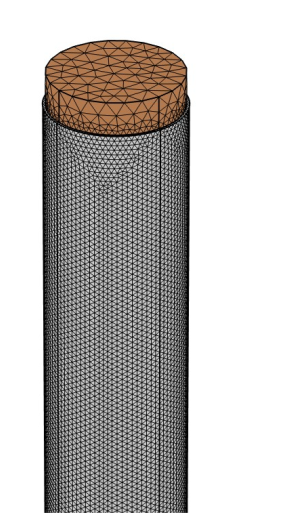
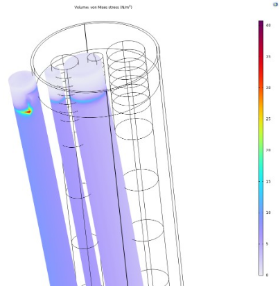
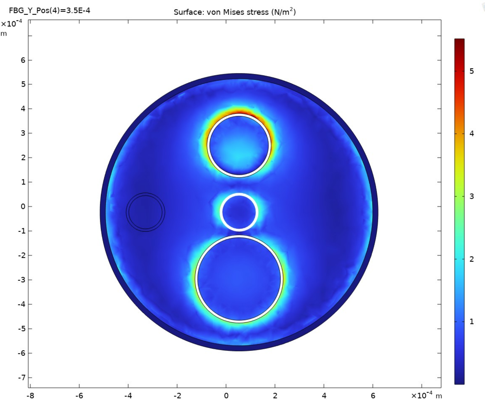
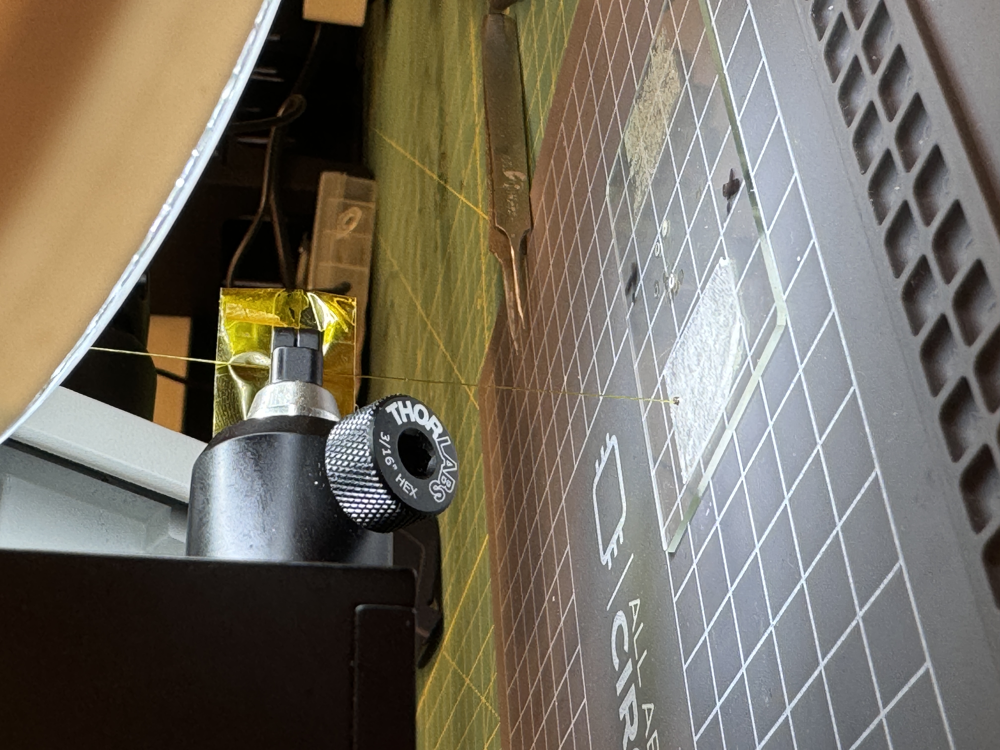
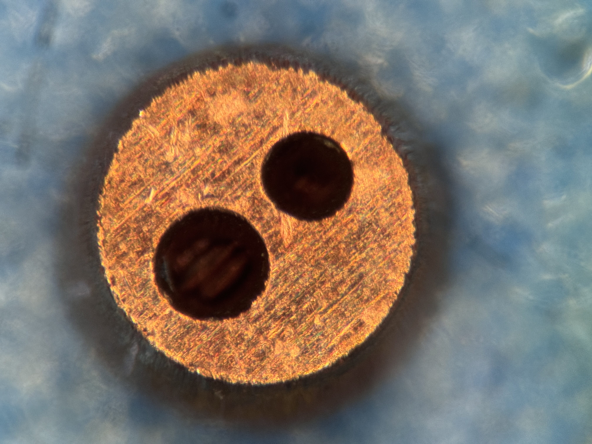
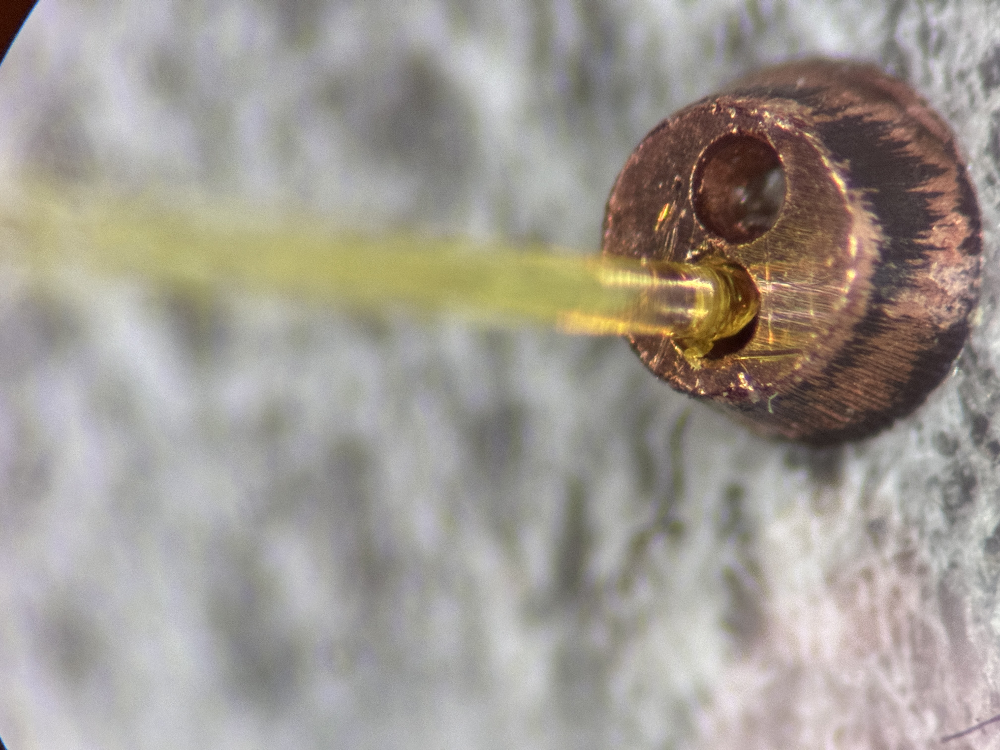
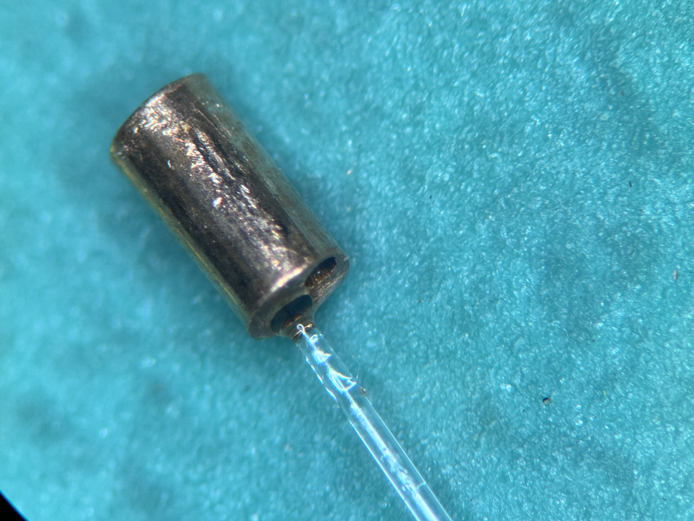
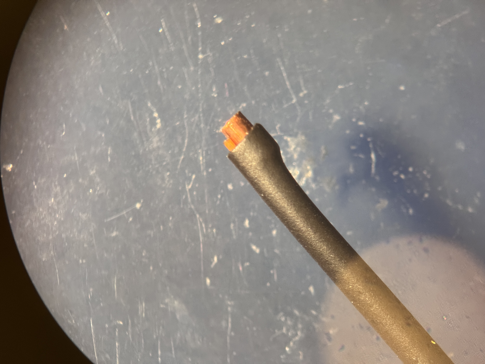
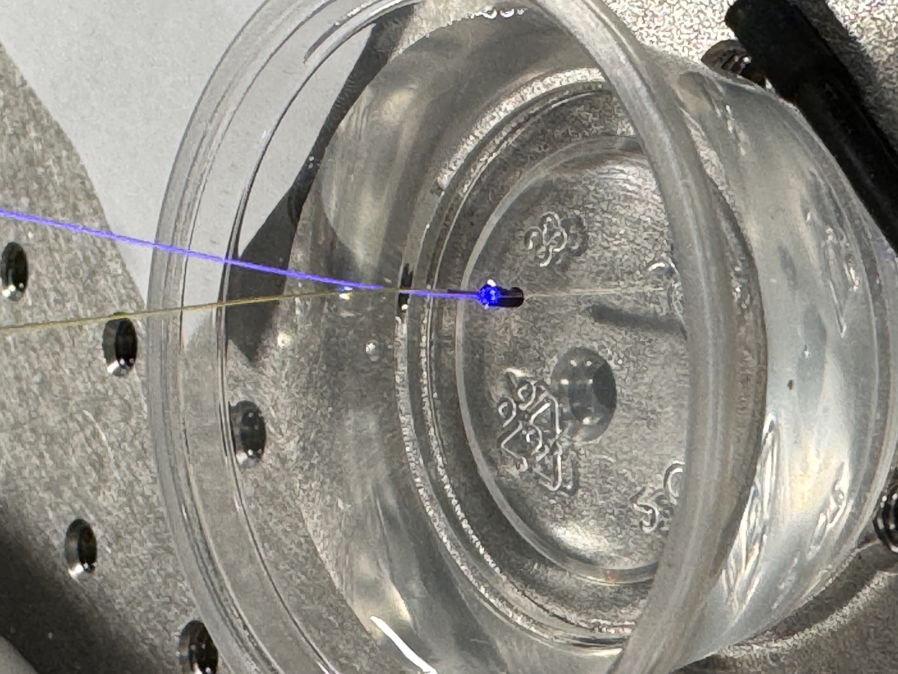
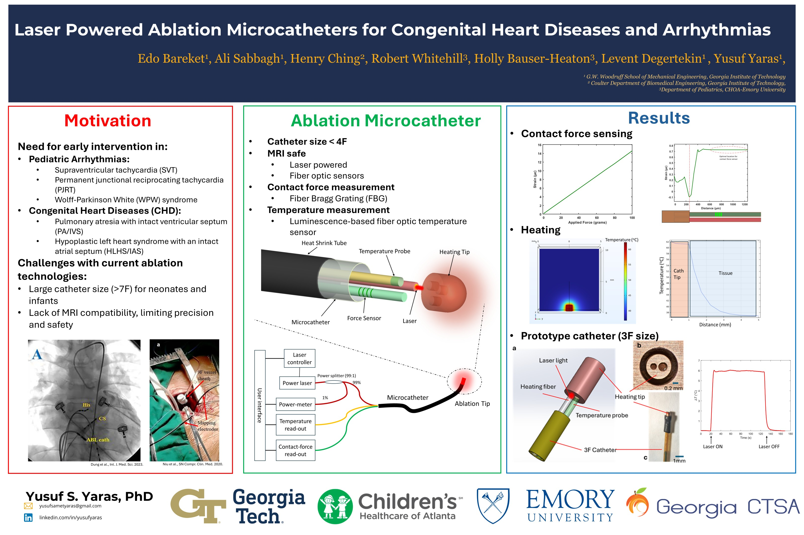

- COMSOL Multiphysics FEA
- MATLAB optical modeling
- Femtosecond laser micromachining
- Fiber optic assembly & alignment
- UV & thermal epoxy bonding
- Precision fabrication & metrology
This project was completed at the MIST Lab as part of a PURA-funded independent study, carried out alongside labmates and a faculty mentor; the design iterations and fabrication shown here are my individual contributions within that larger effort.
At the MIST Lab, I developed a laser-powered microcatheter for cardiac ablation and perforation in neonates and young pediatric patients. Congenital heart disease and arrhythmias in this population often require early intervention, but commercial ablation catheters are too large (>4F) and not MRI-compatible, making it difficult to safely target the small, delicate cardiovascular structures of infants and young children.
Our design replaced RF ablation with direct laser heating: a fiber optic cable delivered laser power to a heating tip that converted light into heat, while a fiber Bragg grating (FBG) sensor measured contact force and a luminescence-based fiber optic sensor measured temperature. Because every component was fiber optic and dielectric, the catheter was fully MRI-safe and fit in a 2–3F form factor, well below the size of existing ablation catheters.
Simulation & Design
To design the heating tip, I built a MATLAB model of the optical absorption and a COMSOL finite element model of the heat transfer and mechanical strain on the fiber optics. I ran parametric sweeps on the fiber arrangement and on the FBG sensor's diameter and position to find a geometry that gave a predictable, linear strain response for accurate force sensing.


Repositioning the fiber optics from a linear to a triangular arrangement reduced stress concentration at the center fiber, and of the three tip geometries I tested, the design with a rigid connector isolated to the FBG fiber produced the smallest strain variability and the most linear force response, making it the strongest candidate for a working prototype.

Fabrication
Building the heating tip proved harder than the simulations. My first approach laser-cut a flat copper plate on the lab's Optec femtosecond system, but the cuts came out with an unintended conical profile that the machine's optics couldn't avoid. I switched to short copper wire segments instead, holding them in a drilled metal rod so I could sand each one flat and consistent by hand before machining.




Once the fibers were seated, I secured them with epoxy and packaged the tip in heat shrink tubing to keep the whole assembly at a stable ~3F lumen size.

Testing
To confirm the tip actually worked, I ran preliminary laser heating tests with the assembled prototype submerged in water. The tip reached temperature reliably under laser power and the temperature sensor tracked it accurately, confirming the copper tip's functional viability as a laser-to-heat converter.

Outcomes
By the end of the PURA award period, the final tip design produced a consistent, linear strain response suited for accurate contact-force sensing, and the fabricated copper tip was validated by laser heating tests that showed reliable thermal activation and temperature readings, confirming it as a functional laser-to-heat converter for the microcatheter.
The project also gave me a lot more independence and responsibility: I was the only person in the lab trained on the Optec laser micromachining system, so I had to troubleshoot machine issues on my own and engineer my own fixture for handling and sanding the small copper segments. Balancing that independence with my mentor agreement (regular updates, simulation work, and lab meetings) deepened my understanding of research as an iterative, creative process.
Poster
This project was also presented as a research poster, co-authored with my MIST Lab collaborators, summarizing the motivation, design, and preliminary results of the laser-powered ablation microcatheter.
